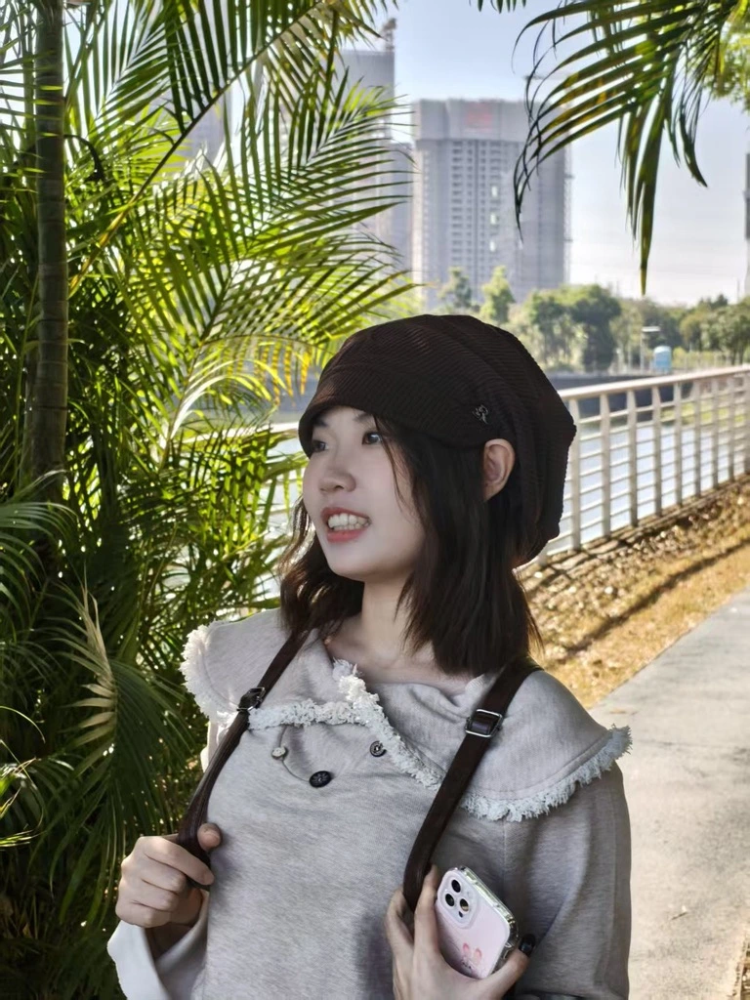
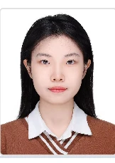
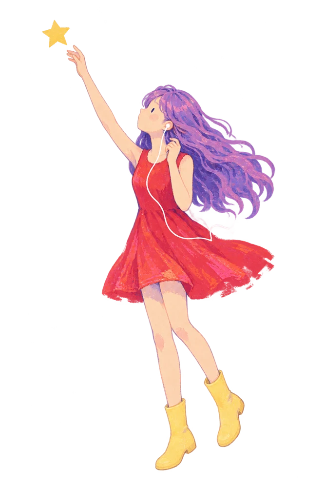
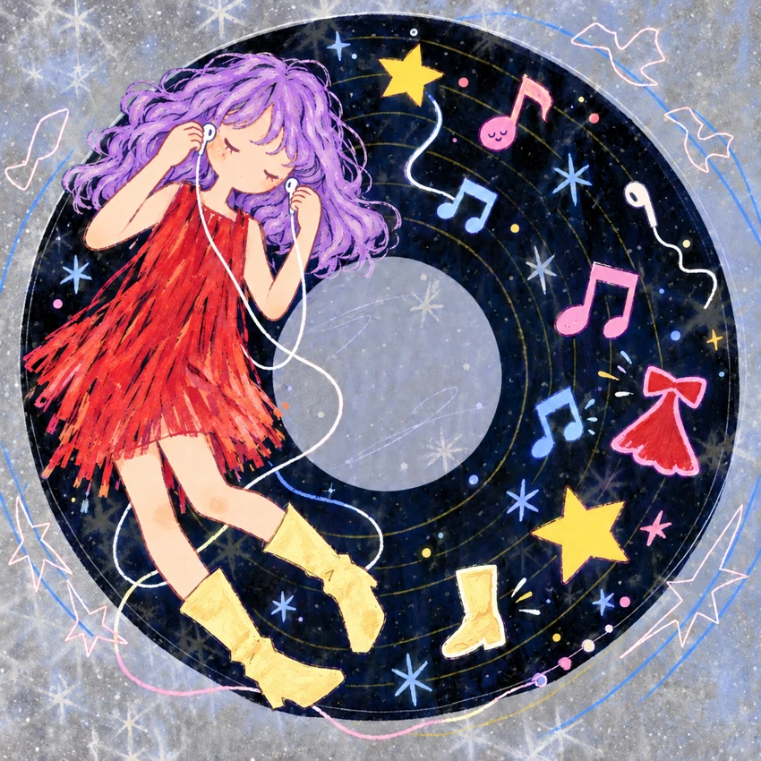
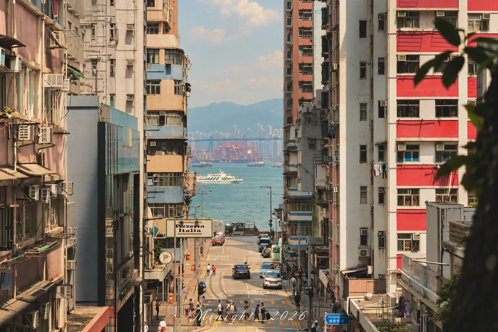

个人产品实践2026
留忆 Memory Islands ↗
把旅行与朋友的照片，变成一本能翻开的册子，
收藏在心里的小岛。
正在搭建音乐游乐园…


用影像记录情绪，
用内容连接人与人，
把一次灵感变成一次行动。
我是严穗敏，华南农业大学生物科学专业的 2027 届学生。从相机后的观察，到活动中的协作，再到自己动手做一个工具，我喜欢让想法有一个具体的样子。

“接下来，
看看我做过的事情。”— Mio
两段实习，一些具体的行动。
点开看看我的工作与案例。
广州领导力学院 · 学习与训练部实习生
活动内容 / 培训支持 / 影像记录 ↗2026.06 — 2026.08 02市场部实习生 · 导购管理
数据跟进 / SOP 梳理 / AI 工作台 ↗选题提出 · 独立完成拍摄 · 六人团队共同创作
那些舍不得忘记的瞬间，让它们再转一圈。

SUIMIN'S COLLECTION VOL. 01光影
LANDSCAPES & PORTRAITS.从自己的生活与工作出发，
构思、尝试，再慢慢改进。
把旅行与朋友的照片，变成一本能翻开的册子，
收藏在心里的小岛。
光影留声室
让这一刻，多停留一会儿。The Story Never Ends
LAUV点播放，或点亮首页的旋转木马。